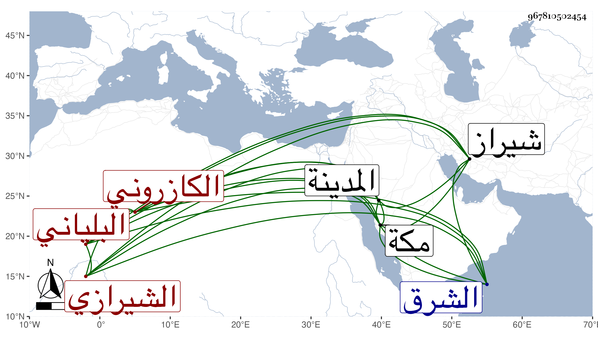

0902Sakhawi.DawLamic.ITO20230111-ara1.EIS1600.967810502454
Biography ID: 967810502454
312
الجنيد بن أحمد بن محمد بن عمر بن محمد بن عمر بن محمد بن أبي طالب عفيف لدين أبو عبد الله بن جلال الدين أبي الفتوح الكازروني البلياني الاصل الشيرازي المذكور أبوه في المائة قبلها . ولد في شوال سنة ست وأربعين وسبعمائة سمع مع أبيه بمكة من ابن عبد المعطي والشهاب بن ظهيرة وأبي الفضل النويري وجماعة ومن آخرين بالمدينة وبلاده ، وأجاز له ابن أميلة والصلاح بن أبي عمر وابن كثير والعز بن جماعة والمحب الصامت وآخرون منهم أبو عبد الله محمد اليزدي والنور الايجي وسعد الدين المصري والزين علي بن كلاه الخنجي وأبو الفتوح الطاووسي خرج لهم عنهم الشمس الجزري مشيخة ، وحدث بها وأخذ عنه الطاووسي وقال كان ملاذ الضعفاء والمساكين ذا كرامات ظاهرة وأحوال شهيرة . مات في يوم الجمعة ثامن عشر ربيع الثاني سنة تسع بعد أن صار عالم شيراز ومحدثها وفاضلها . ذكره شيخنا في أنبائه باختصار لكن في سنة احدى عشرة وقال أفادنا عنه ولده الشيخ نور الدين محمد لما قدم رسولا عن ملك الشرق بكسوة الكعبة في سنة ثمان وأربعين .
